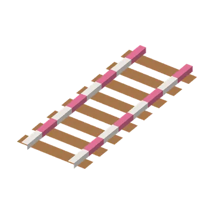
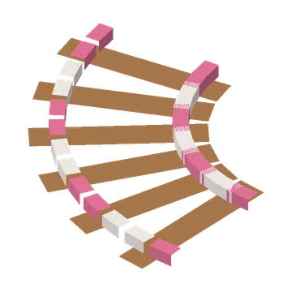
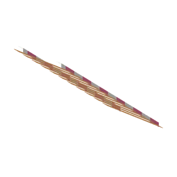
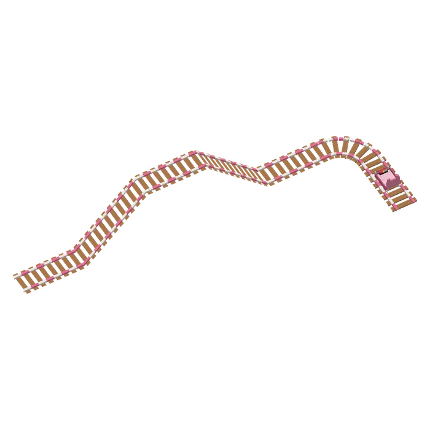
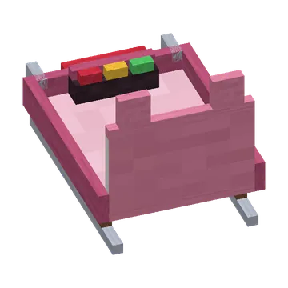

Build a sled track with sled rails and ride the guh sled with your guhs, with curves, drops, corkscrews and jumps.
Bouw een sleebaan met sleerails en rijd met je guhs in de guhslee, met bochten, drops, kurkentrekkers en schansen.
The guh sledDe guh-slee
A pink sled with guh ears on the back and a bell on the front, pulled by four little guhs that walk along the rails ahead of it. It turns with every bend and rides on its own sled rails, forwards or backwards, up and down hills. Get on with right-click; right-click while riding opens the control panel: start / stop, turn around and three speeds (slow, normal, WHEEE). At the end of the line the sled stops and turns around, ready to go back. There's room for two (a guh fits behind you). Sneak + right-click or hit an empty sled to pick it up.
Een roze slee met guhoortjes op de rugleuning en een belletje voorop, voortgetrokken door vier kleine guhs die voor hem uit over de rails lopen. Hij draait mee in elke bocht en rijdt op zijn eigen sleerails, vooruit of achteruit, heuvels op en af. Stap in met rechtsklik; rechtsklik tijdens het rijden opent het bedieningspaneel: start / stop, omkeren en drie snelheden (langzaam, normaal, WIEEE). Aan het eind van de baan stopt de slee en keert hij om, klaar om terug te gaan. Er is plek voor twee (een guh past achter je). Sluip + rechtsklik of sla een lege slee om hem op te pakken.

StraightRecht
4 blocks straight on.4 blokken rechtdoor.

CurveBocht
A quarter turn to the right; sneak for a left turn.Een kwartslag naar rechts; sluip voor links.

SlopeHelling
4 forward and 4 up. Sneak when adding it to a track to go down instead.4 vooruit en 4 omhoog. Sluip als je hem aan een baan vastmaakt om juist te dalen.
Building a trackEen baan bouwen
Every rail piece is 4×4 blocks. Click on the ground to start a track in the direction you're looking; click on the end of an existing rail to add the next piece exactly there. Breaking any block of a piece breaks the whole piece (you get it back). Put a sled on the rails with right-click.
Elk stuk rail is 4×4 blokken. Klik op de grond om een baan te beginnen in de richting waarin je kijkt; klik op het eind van een bestaande rail om het volgende stuk precies daar vast te maken. Breek je een blok van een stuk, dan gaat het hele stuk (je krijgt het terug). Zet een slee met rechtsklik op de rails.
Guhland has a sled coaster now: a big loop with a hill, a station with a ladder, and two Guhland sleds that can't be taken home (one with a guh already riding it).
Guhland heeft nu een sleebaan: een grote lus met een heuvel, een station met een ladder en twee Guhland-sleeën die je niet mee naar huis kunt nemen (in een ervan rijdt al een guh).


The sled's buttonsDe knopjes van de slee
The sled has a little dashboard with three buttons at your feet. While the sled stands still they blink: right-click while riding to open the panel. Every button in the panel (and in the guh menu) tells you what it does when you hover over it.
De slee heeft een dashboardje met drie knopjes bij je voeten. Zolang de slee stilstaat knipperen ze: rechtsklik tijdens het rijden om het paneel te openen. Elke knop in het paneel (en in het guhmenu) vertelt wat hij doet als je er met je muis op staat.